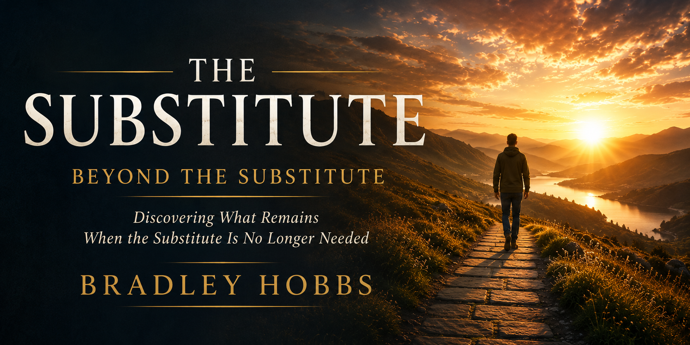

Healing changes more than behavior. Freedom changes more than circumstances. When the substitute loses its power, a deeper question begins to emerge: What remains?
Beyond the Substitute continues the journey begun in The Substitute by exploring healing, forgiveness, identity, freedom, purpose, and hope. Through honest reflection and practical insight, this book examines what life can become when old patterns no longer control daily life.
Begin ReadingThe Substitute asked an important question: What is the addiction substituting for?
Beyond the Substitute explores the next stage of that journey. Rather than focusing on the substitute itself, this book examines healing, forgiveness, freedom, identity, purpose, and the future that becomes possible when old patterns no longer control daily life.
Through discussions of emotional recovery, personal growth, faith, resilience, and hope, readers are invited to discover that healing is not merely the absence of struggle. Healing is the presence of something greater.
This book is an invitation to discover what remains when the substitute is no longer needed.
Readers will explore healing, forgiveness, identity, freedom, purpose, and hope while moving beyond survival and toward a fuller understanding of what lasting transformation can look like.
Each chapter builds upon the last, creating a continuous journey from recovery toward restoration, from restoration toward freedom, and from freedom toward purpose.
The destination is not perfection. The destination is wholeness.